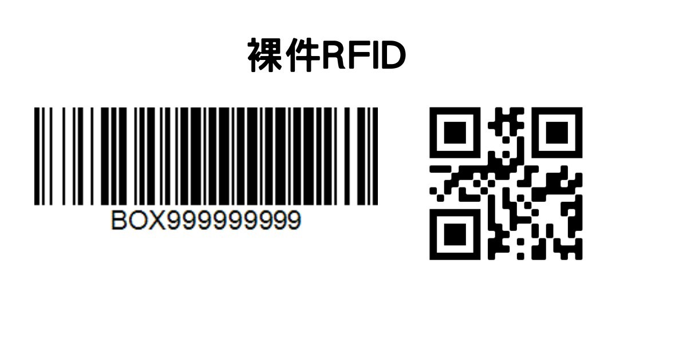

🦐智取流程
📌Apollo阿波羅打卡
公司代碼：Shopee
工號：SPX(自己的工號）
❗️例如SPX15340
密碼：Apollo(自己的生日）（第一次登入）
❗️例如Apollo0928
📌開班（算進貨的箱數）
1️⃣寄件包裹離店裝箱
2️⃣列印物流箱單（TO單）
3️⃣選門市打卡用_測試
4️⃣數量1
5️⃣打上自己的工號🌟一定要打對🌟
6️⃣拍照回傳智取大群
（打上今天進貨箱數，如有滯留也要➕上）
📌挑逾期（PDA)
1️⃣包裹離店
2️⃣開啟櫃位
（同取件人櫃位要核對一下訂單編號）
3️⃣最下方店別及收件人名字及後三碼畫X
4️⃣逾期包裹離店裝箱
5️⃣開始裝箱（選逆物流包裹）
❗️要確認所有逾期包裹都能裝進箱子裡，不然就分兩箱，以此類推
6️⃣刷包裹條碼
❗️包裹要一個一個過刷（很重要）
7️⃣刷RFID（箱子上的）
裸箱的話就刷裸箱RFID
8️⃣貼上TO單（逆物流包裹TO單）
📌包裹上架
1️⃣智取櫃櫃位管理
❗️先看可用櫃位剩多少(智取櫃位管理），大顆包裹櫃位剩多少(PDA點進去手動上架看）再決定要拉多少箱子出去，減少拉箱子的時間
❗️拉出去要上架的箱子以不影響客人動線為原則
❗️確認店鋪可以放物流箱的地方，用小烏龜先將移出去
2️⃣拿一些大跟小的層板放外面，方便拿取
📌智能上架（藍色TO單）方式為：
刷包裹-放包裹 -關上門
❗️只要放不下推薦櫃位or同取件人放不下的都要點選無法放入，其他一律都放進去
📌手動上架（紫色TO單）方式為：
刷包裹-放包裹 -刷儲位-關上門
❗️包裹不要硬塞
📌PDA上只能全部開啟同一區的所有門，無法單開一個門，如果要開單個，請使用網頁版point
📌包裹上架完，一定要先按PDA最下面的完成上架/完成掃描才算完成（❗️很重要）
中途拉箱、換烏龜車時也可以先按完成掃描
3️⃣上架順序
1.昨天未上架完的箱數跟裸件優先上架
2.大顆裸件包裹先手動上架（藍色紫色）
3.藍色TO單先上架
（智能上架，以箱子裡最小包裹先刷上架）
❗️將智能上架無材積資訊跟無合適櫃位包裹放旁邊的空箱，最後一起紫色手動上架
4.紫色TO單上架
❗️以日期最舊的先上架（很重要）
5.上架完成後，開啟所有櫃門檢查是否有漏刷上架的包裹，或是客人遺留的包裹
6.整理空箱、層板、收寄件包裹、拍照回報
7.打掃一下店鋪(目前只需收垃圾、撿門市地上大型垃圾）
8. 前往下一家，記得門、冷氣、電燈要確實關閉，PDA要充電、鑰匙要掛回
（❗️很重要）
📌上架率回報
日期 ：
門市名稱：
開店時間：
上架完成：
錯店件數：
濕破損件數：
特殊異常：
包裹進店驗收件數：
物流箱實到箱數：
物流箱已上箱數：
上架率：
空箱：
未上架：
❗️上架率算法：
物流箱已上箱數➗物流箱實到箱數🟰上架率
📌查詢包裹進店驗收件數和上架完成時間
1️⃣買家取件包裹查詢
（上面數下來第二個）
2️⃣日期按x
重新選今天日期（按查詢）
3️⃣查詢最後上架完成時間
（往後拉看最後一個包裹上架時間）
📌查詢賣家寄件數
1️⃣賣家寄件包裹查詢
（最上面第1個）
2️⃣日期改今天跟昨天（按查詢）
📌拍照回報
1.拍紙捲確認
❗️繳費機紙捲每天換的門市：社頭員集、北斗中山、北斗復興、永靖瑚璉、埔心中正
2.寄件紙捲拍照➕寄件面單列印測試
3.印繳費機測試列印和紙捲拍照
4.清空收據回收盒及寄件收據
5.回報畫面照片
6.閉店回報照片（工號記得打）
打完閉店卡要拍打卡媒合確認
寄件包裹離店裝箱➡️寄件物流箱清單➡️Topack欄選門市打卡用_測試
7.寄件包裹離店照片
8.如有滯留也要拍照回傳
滯留物流箱需做記號，
當天日期➕早班打✅晚班打✖️
依照To單上日期越前面的往前放
📌繳費機列印測試
以Qr code 開啟繳費機
❗️永靖中山、花壇彰員的Qr code不一樣⬇️
拍繳費機紙捲確認
📌循環包材箱檢查有沒有垃圾和循環包材
❗️循環包材每天都要送回（很重要）
（現在還有一種循環包裝是類似破壞袋上面有魔鬼氈）
印循環包材TO單裝箱
📌包裹錯店
1.單顆錯店
(不論一顆兩顆三顆，非整箱都是單顆錯店)
2.整箱錯店
（整箱包裹錯店，外箱TO單錯誤，印整箱錯店）
3.To單錯店
（整箱包裹都是錯店，外箱To單正確，印To單錯店）
📌濕損、破損
拍照回報經理，照片放置智取大群的相簿
標示哪天哪間店濕損或破損
照片要有包裹面單和濕損破損的地方
📌遺留包裹
◉情況（1）
上架時，發現櫃位有包裹
◉情況（2）
全開櫃位檢查時，發現有包裹
（若櫃位裡有包裹先查詢貨態，確認是否是遺留包裹或是漏刷上架包裹）
若是遺留包裹，要拍面單和暫停使用哪一個櫃位（拍櫃位），回報群組相簿
📌異常包裹
上架物流箱中無法上架（PDA顯示訂單狀態錯誤）的包裹，先查貨態，ex：重複面單、訂單取消、遺失件
用便利貼標示貼於包裹上，
➡️印異常包裹To單裝箱
➡️務必記得拍照（包裹面單➕To單）
➡️上傳異常包裹相簿
📌筆電、寄件平板、網頁信箱
登入密碼：spxtw123或Spxtw123
［早班有可能碰到NDD離店］
背景：因NDD包裹時效為14:00-20:00，晚班於21:00起打包離店包裹，但可能因【賣家延遲出貨刷件】而導致晚班未處理。
你會看到的情況：在進行每日逾期離店裝箱時，會看到最上面依舊有未打包的通知。
處理方式：請前往NDD寄件區（通常為橘櫃）打包NDD包裹，照【正常NDD離店】流程進行。
Q:要怎麼確認有賣家延遲發貨？
A:請至【隔日到貨&逾期離店逐顆裝箱】模組，上端查看有無黃色提示訊息。
注意！就算是延遲NDD也要逐顆刷件+獨立擺放
注意！就算是延遲NDD也要逐顆刷件+獨立擺放
注意！就算是延遲NDD也要逐顆刷件+獨立擺放
早班若還對NDD進/離店不熟的，請再多複習！未來也不排除會遇到【司機延遲到店】導致早班上架NDD的情形發生！
我的筆記
1. 開班：阿波羅上班定位打卡、列印上班TO單、拍打卡單(單子配合電腦時間畫面)回報群組 - 單店專屬相簿，無需打店名日期
2. 點進店箱數、文字回報群組
1. 格式：員林莒光二 8+4裸 滯留 4+7裸
3. 挑逾期逆物流包裹、馬上打包以免客人來取件
4. NDD上架、滯留包裹、新進包裹上架，一律先智能上架再手動上架
5. 檢查繳費機收據、測試列印、收垃圾、拍照回報群組
6. 檢查自助寄件機收據、測試列印、收垃圾、拍照回報群組
7. NDD寄件：另外裝箱，南北需分開裝箱，並於外箱貼上南北貼紙，南北箱子分開疊放，不可交錯，完成後全部箱子拉到店外放
8. 電腦表單回報
9. 打離店下班TO單、鑰匙掛回，拍照回報
10. 回報群組前面拍下的所有照片，以及離店前文字回報，格式如下：
1. 門市格口使用資訊照片(上架完才拍，拍攝剩餘可用櫃位數量) - 所有店統一在一個相簿，必須打日期店名班別
2. 寄件包裹離店照片(拍攝疊起橘箱) - 所有店統一在一個相簿，必須打日期店名班別
3. 滯留箱照片(貼上請勿離店海報) - 所有店統一在一個相簿，必須打日期店名班別
4. 閉店照片(單子配合牆壁上鑰匙畫面) - 單店專屬相簿，無需打店名日期
5. 回報表單畫面兩張(進店、離店) - 單店專屬相簿，無需打店名日期
6. 紙卷確認照片 - 單店專屬相簿，無需打店名日期
7. 垃圾帶走照片 - 無相簿，群組直接發
8. 打卡媒合確認相簿(查詢打卡記錄，拍攝電腦畫面) - 所有店統一在一個相簿，必須打日期店名班別
9. 文字回報：(範例) - 群組直接發
日期：5/14
門市名稱：員林莒光二
上架秒數：15.7
包裹進店驗收件：107
寄件數：75
上下班時間：員林莒光二 08:30-10:20
11. PDA、指環、掃描槍充電
12. 關燈、關冷氣、檢查鑰匙、裝袋垃圾記得帶走、私人物品記得帶、離開店鋪
13. 阿波羅下班定位打卡
尚未覆蓋到情況
1. 異常包裹打包裝箱
2. 早班NDD
3. 破損包裹處理